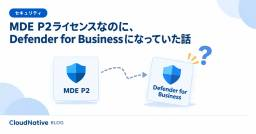
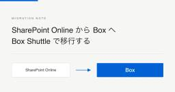
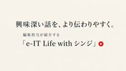
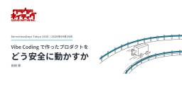
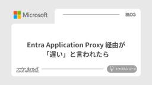

CloudNative BLOGs
https://blog.cloudnative.co.jp
株式会社クラウドネイティブの技術ブログ。ゼロトラスト、SaaS、AI、セキュリティなどの最新情報をお届けします。
フィード

【YouTube動画】SCS評価制度は自社にも関係する？現時点で分かっていることと準備の考え方
CloudNative BLOGs
SCS評価制度は自社にも関係するのか。現時点で公表されている制度の大枠と、企業が考えておきたい準備をYouTube動画とともに紹介します。取得支援サービスやオフラインイベントもご案内します。
2日前


変化の早いITで、変わらない情シスの判断軸―自社のITを考える4つの問い
CloudNative BLOGs
製品や技術が変わっても、情シスが確認すべき問いは大きく変わりません。「お風呂で情シスラジオ」の切り抜き動画を手がかりに、自社のITについて考える4つの問いを整理します。
3日前

Okta VerifyがFastPass・プッシュ・TOTPに分かれる。既存ユーザーへの影響と登録ポリシーの設定例
CloudNative BLOGs
Okta VerifyをFastPass / プッシュ / TOTP別に制御できる新設定の内容と、GA自動適用時の注意点を解説します。既存ユーザーへの影響や登録ポリシー設計例、事前チェック項目を整理します。
3日前
外部向けGoogleフォームでファイルアップロードを使わない方がよい理由
CloudNative BLOGs
外部向けGoogleフォームでファイルアップロード付きフォームが開けない事例をもとに、Drive共有設定や許可リスト登録の切り分け手順と、外部利用時の注意点を解説します。
4日前

MDE P2ライセンスなのに、Defender for Businessになっていた話
CloudNative BLOGs
MDE P2を契約していてもテナントがDefender for Businessになる事例を解説します。Defenderポータルでのモード確認・切替手順、必要ライセンスや反映待ち、切替後の注意点を整理します。
4日前

SharePoint Online から Box へ Box Shuttle で移行する
CloudNative BLOGs
Box Shuttle で SharePoint Online から Box へ 1.5 TB を移行した実録です。移行先 Box の容量上限がサポート依頼制であること、SharePoint 側のサイトコレクション管理者権限が最大の関門になること、転送は Box 側で完結して手元のマシンを拘束しないことを、実際の所要時間とエラー内容もあわせて整理します。
4日前
GAPS of GAPS — コーディングエージェントが警報だけを止める
CloudNative BLOGs
システム開発の失敗要因を Goal / Activity / Process / Skill の四つのズレに分ける GAPS と、ズレを埋める手が次のズレを生む入れ子構造 GAPS of GAPS。20年前の枠組みをコーディングエージェントを入れた開発に当てはめると、ズレは消えないまま症状だけが出なくなる。
4日前

興味深い話を、より伝わりやすく。編集担当が紹介する「e-IT Life with シンジ」
CloudNative BLOGs
情シスやセキュリティをテーマに語るYouTubeシリーズ「e-IT Life with シンジ」。そのまま聞いても十分に価値のある話を、編集でさらに伝わりやすく。「e-IT Life with シンジ」の魅力やテロップ・テンポ調整の工夫、毎週水曜日18時20分の更新情報を編集担当が紹介します。
4日前


ServerlessDays Tokyo 2026 にブース出展＆登壇しました！【イベントレポ】
CloudNative BLOGs
2026年9月19日開催の ServerlessDays Tokyo 2026 にブース出展しました。スタンプラリーでにぎわったブースの様子と、前田が登壇したセッション「バイブコーディングで作ったプロダクトをどう安全に動かすか」をレポートします。
5日前

ServerlessDays Tokyo 2026 で「Vibe Coding で作ったプロダクトをどう安全に動かすか」を話してきました
CloudNative BLOGs
2026年9月19日の ServerlessDays Tokyo 2026 で「Vibe Coding で作ったプロダクトをどう安全に動かすか」というセッションを発表しました。「意図した通りに動く」と「問題がない」は別物という前提に立ち、ガードレールをプロダクトの外側（マネージドサービスとデプロイ経路）に置くという考え方を紹介します。発表資料も Speaker Deck で公開しています。
5日前

【備忘録】Entra Application Proxy 経由が「遅い」と言われたら
CloudNative BLOGs
Microsoft Entra Application Proxy経由だけ遅いと言われた際の切り分け手順を解説します。HAR取得とAI分析で遅延が経路固定かサーバ起因かを見極め、測定設計や注意点も学べます。
6日前

『部下としてのAI 世界一流エンジニアの進化術』を読んで、AI との付き合い方を見直している
CloudNative BLOGs
米マイクロソフトのシニアソフトウェアエンジニア、牛尾剛さんの『部下としてのAI 世界一流エンジニアの進化術』を読んだ感想です。AI がコードを書く時代に価値が残る「インサイト」、「余分な情報を与えない」コンテキスト・マネジメント、Fail Fast の自動化、新しい「Be Lazy」、人間側の脳がボトルネックになる話まで、とくに刺さった箇所を紹介します。
6日前

個人情報保護士に合格した勉強法と受験までの流れ
CloudNative BLOGs
個人情報保護士認定試験に独学で合格した記録です。試験の概要と出題範囲、公式問題集を3周する勉強法と平日1時間・休日2時間で約50時間の学習スケジュール、独学と対策講座の費用比較、オンラインIBT受験の注意点までまとめました。
6日前
Blueprint Allianceが示すAIエージェント統制の4つの問いを紐解く
CloudNative BLOGs
2026年9月22日にOktaが12社と結成したBlueprint Allianceを解説します。AIエージェント統制の6原則と「4つの質問」、GA済み機能と今後の予定の違い、Microsoft不参加がEntra中心の企業に与える影響を、情シス・セキュリティ担当者の実務目線で整理します。
7日前

職種の枠をはみ出して働く！アシスタント兼マーケ広報の1日
CloudNative BLOGs
アシスタント業務を軸に、マーケティング・広報・イベント運営・コンテンツ制作にも関わる働き方を紹介します。日程調整や議事録などのアシスタント業務、イベント運営や導入事例制作といった広報業務、GleanとAsanaを使った1日の進め方まで、職種を固定しないクラウドネイティブの働き方がわかります。
8日前
営業からPMへの転職は、ジョブチェンジじゃなかったかもしれない（1）PMは営業の「延長線」なのか？
CloudNative BLOGs
営業からPMへ転職して1年あまり、残ったスキルをどう出すかでつまずいた経験をたどります。出す順番が変わった最初の壁と、誰が何をやるかを問われた二番目の壁から、営業とPMの違いを自分の言葉にしようとする連載の第1回です。
9日前
同じBoxテナントでも、環境ごとにファイルリクエストの可否を分けたい時はNetskopeで「/f/」だけを塞ぐ
CloudNative BLOGs
Boxのファイルリクエストは、テナント設定では発行側（作成・編集できるユーザー）しか制御できず、Instance Awarenessでも同一テナント内の環境別制御はできません。Boxが生成する通常のファイルリクエスト共有URLが /f/ で始まる仕様を利用し、NetskopeのDestination Profile（URL Listsの後継）とスコープ付きRTPポリシーで、特定環境（共有VM等）だけファイルリクエストを塞ぐ手順を解説します。
9日前
Jamf Nation User Conference 2026に行ってきた！(1日目~Keynote編~)
CloudNative BLOGs
Jamf Nation User Conference 2026に行ってきました。初日に開催された2つのKeynoteセッションで気になったものについて取り上げています。
9日前
クラウドネイティブに入社しました。
CloudNative BLOGs
CloudNativeへの入社背景や、入社後に感じたチームの雰囲気・働き方、今後挑戦したいことを自己紹介としてまとめた記事です。
9日前
退職・異動・役職者の権限は、誰が減らすのか。CISAの内部脅威対策ガイド改訂を機に確認する6点
CloudNative BLOGs
退職・異動・役職者の権限が減らない理由を、米CISAが2026年9月に6年ぶりに改訂した内部脅威対策ガイドを裏付けに、情シスの運用として6点で確認します。退職者アカウントの停止、異動時の旧権限、アクセスレビュー、AI利用統制の着手順もまとめました。
9日前
Jamf Nation User Conference 2026に行ってきた！(0日目~珍道中編~)
CloudNative BLOGs
Jamf Nation User Conference 2026に行ってきましたがJNUCの内容には触れていない珍道中報告です。
10日前
約2ヶ月でCISSPに合格した勉強法と受験までの流れ
CloudNative BLOGs
トレーニング講座なしの独学、約2ヶ月・合計200時間でCISSPに合格した記録です。教材、問題集中心の学習サイクル、公式講座との費用比較、申し込みとCAT形式の当日の流れをまとめました。
10日前
AIエージェントのセキュリティは何から手を付けるか｜英NCSC中間ガイダンスの読み方
CloudNative BLOGs
英NCSCが2026年8月に公開したエージェント型AIの中間ガイダンスを、情シス・セキュリティ担当者向けに解説します。自律度に応じた統制、サンドボックスの成熟度4段階、エージェント専用ID、監査ログ、緊急停止まで、自社の運用を点検する手順に落とし込みます。
15日前
IaC初心者がTerraformでEntra IDを触ってみた。変更履歴は本当に追えるのか
CloudNative BLOGs
TerraformでEntra IDのセキュリティグループを作成し、手順書運用と比較します。無断変更の検知・是正、監査ログとGitの役割や限界を整理したい方に役立ちます。
18日前
クラウドネイティブに入社しました。
CloudNative BLOGs
2026年9月にクラウドネイティブへ入社したセキュリティチームのkazunoriが、Web開発7年のキャリアからセキュリティ領域を志した理由、入社の経緯、社内AIや分報など入社して感じた環境を紹介します。
18日前
Netskope Client の「データセンターピンニング」機能を試してみた
CloudNative BLOGs
Netskope Client の Data Center Pinning を実機検証。nsdiag --pin による POP 固定手順、Pinned 表示でも既存トンネルが切り替わらない挙動、最大 24 時間・フェイルオーバー不可などの制約を整理します。IP 許可リスト用途には不向きですが、障害時の一時退避や切り分けには活用できそうです。
19日前
SaaS設定はどこを正本にする？管理方式の選び方
CloudNative BLOGs
SaaSの設定台帳を更新し続けるには、設定値と判断の理由をどう残すかを考える必要があります。コード管理・専用製品・手動の台帳・観測型を、正本の所在と記録の更新方法で比較し、設定の領域ごとに管理方法を選ぶための条件を整理します。
19日前
Okta の Office 365 プロビジョニング再認証、対象と手順をまとめました
CloudNative BLOGs
Okta の Office 365 アプリで User Sync / Universal Sync を使っている環境は、2026年9月30日までに管理者による再認証が必要です。アプリケーションベース認証（ABA）への切り替えの背景、対象環境の確認方法、再認証の具体的な手順、つまずきやすいポイントまでをまとめました。
19日前
社内Wikiだけではもったいない。Notionエージェントで会社の仕事はどこまで変わる？
CloudNative BLOGs
Notionは、社内Wikiやドキュメントを置くためだけの製品ではなくなっています。ナレッジ、議事録、申請、タスクを同じ場所に集め、AIエージェントに業務を任せるために何を決めておくか、どこから始めるかを解説します。
23日前
今さら聞けないアクセス・権限の略語｜IAM・ACL・RBAC・ABAC・PAMを新人向けに整理【2026】
CloudNative BLOGs
アクセス・権限まわりでよく出るIAM・ACL・RBAC・ABAC・PAMの5語を、最小権限の原則を軸に、意味と登場する場面から整理します。IAMとIdP、RBACとABAC、PAMとPIMの違いも一次情報にもとづいて確認できる、新人向けのリファレンス記事です。
24日前
クラウドネイティブに入社しました！大阪から運用支援チームに参加します
CloudNative BLOGs
2026年9月にクラウドネイティブへ入社した運用支援チームのryuyaが、接客から一人情シスを経たキャリアと入社動機、オンボーディングで実感した整ったIT環境、今後の挑戦を紹介します。
24日前
Keeperのアイコン、ここでは消したいと思ったことありませんか？
CloudNative BLOGs
業務画面の入力欄に出る Keeper のアイコン、「ここでは消したい」と思ったことはありませんか？KeeperFill のサイト別無効化とフィールドアイコン設定を実測し、管理者と利用者それぞれにできること、URL の一致ルールや設定反映の注意点を紹介します。
25日前
「AIが脆弱性見つける時代」のWindows更新運用をトリアージから作り直す
CloudNative BLOGs
Microsoftの月例更新は2026年に206件・570件・421件と急増し、同社はAIによる脆弱性発見で今後も増えると公式に予告しました。CVSS降順のトリアージが破綻する前に、KEVとExploitedフラグで例外を抜き、残りをIntuneの更新リングと迅速化ポリシーで捌く2レーン運用へ再設計する手順を解説します。
1ヶ月前
Wiz Atlasの「Mythos超え」から考える、AIに仕事を任せる設計。サイバーエージェントの実践と共通するもの
CloudNative BLOGs
Wiz AtlasがCyberGymでClaude Mythos Previewの公表値を上回った事例と、サイバーエージェントのBUGMAPの実践から、AIに仕事を任せるための分解・役割分担・検証・実行環境の設計を読み解きます。最強モデルを待たずに始めるための経営者やセキュリティ担当者向けです。
1ヶ月前
製品選定で「どこから買うか」を大事にしてほしい話
CloudNative BLOGs
製品選定と同様に「どこから買うか」の重要性を解説し、Okta・CrowdStrike・Netskopeを扱うCloudNativeが提供するエンジニア同席や導入後サポートを通じて、IT担当者や経営層が最適なパートナー選びの指針を示します。
1ヶ月前
複数案件を管理するためにキャッチアップを仕組み化してみた
CloudNative BLOGs
複数案件を掛け持ちするPMが、情報錯乱を防ぐために案件ごとに状況を1枚に畳み、Claude Codeの自作スキルで各ツール横断要約と差分更新を回す方法を解説します。
1ヶ月前
こんな人はクラウドネイティブに向いてる！【フルリモート×フルフレックス】
CloudNative BLOGs
クラウドネイティブは現在採用強化中。フルリモート×スーパーフルフレックスで実際に働くアシスタント兼広報が、「どんな人がクラウドネイティブに向いているのか」を4つの特徴に整理しました。timesチャンネルの文化や自制心が求められる働き方、カジュアル面談の案内まで、入社を検討している方向けの記事です。
1ヶ月前
Netskope の Google CASB API が BYOP へ移行。Google / GCP 側で先に準備が必要なことは？
CloudNative BLOGs
Netskope の Google CASB API が、共有プロジェクトから BYOP（Bring Your Own Project）へ移行します。対応の中心は Netskope 側ではなく、Google Cloud と Google 管理コンソールでの事前準備です。GCP プロジェクト、必要な API、サービスアカウント、JSON キー、ドメイン全体の委任まで、2026年9月30日の期限に向けて必要な作業と注意点を整理します。
1ヶ月前
改正個人情報保護法に備える | 情シスが今始めるべきこと
CloudNative BLOGs
2026年7月公布の改正個人情報保護法を情シスの視点で整理します。課徴金の対象4類型、委託先義務の明文化と免除特例、特定生体個人情報の規律、漏えい時の本人通知の緩和を押さえ、政令・委員会規則の公表前に着手すべき棚卸しと契約点検の進め方を解説します。
1ヶ月前
Slack × Notionカスタムエージェントで、情シスの問い合わせ窓口に一次回答を任せてみた
CloudNative BLOGs
SlackのスタンプまたはメンションでNotionカスタムエージェントを起動し、社内問い合わせの記録と一次回答を任せる仕組みを作りました。設定、指示文の設計、クレジット消費の目安をまとめます。
1ヶ月前
組織のAI品質を底上げする方法、無料配布します
CloudNative BLOGs
組織のAI出力品質を底上げする4つのCore Skills（Writing・Evidence・Decision・Agent Safety）を改変可能ライセンスで無料公開します。Glean・Notion・Claude・ChatGPTの4製品へ全社配布する方法と、適用前後の回答比較を解説します。
1ヶ月前
Notion Workersの料金はいつから？6月以降の更新まとめとクレジット運用
CloudNative BLOGs
Notion Workersの無料ベータは2026年10月15日に終わり、以降はNotionクレジットが必要になります。1 runあたりの単価とrunの数え方、6月以降に増えたクレジットダッシュボードやDeveloper Portal、課金開始前に見ておく3か所を、公式ヘルプの記述に沿って情シス向けに整理します。
1ヶ月前
Auth0とは？独立CIAMとしての特徴・できること・向いているケース【2026】
CloudNative BLOGs
顧客向けID基盤（独立CIAM）の選択肢のひとつ、Auth0を製品選定の担当者向けに紹介します。Universal Loginでの組み込み方、パスキーやMFAの追加、Organizationsでの取引先SSO、Attack Protection、データのリージョンまで、自社要件との相性を判断する観点で整理します。
1ヶ月前
フルリモート×フルフレックスで働くアシスタントの“とある1日”
CloudNative BLOGs
フルリモート×フルフレックスで働くアシスタントの一日を、朝のルーティンから会議・議事録・調整まで時系列で紹介し、SlackやAsana等で「安心」を支える工夫を解説します。
1ヶ月前